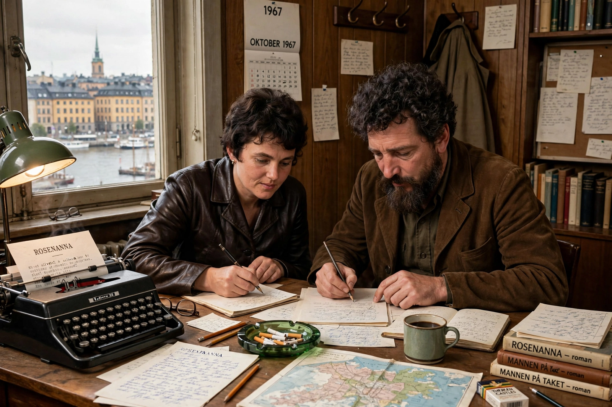

Sjöwall and Wahlöö
 | |
| Members | Maj Sjöwall (1935–2020), Per Wahlöö (1926–1975) |
|---|---|
| Nationality | Swedish |
| Genre | Police procedural, Nordic noir |
| Notable works | The Martin Beck series: Roseanna (1965) – The Terrorists (1975) |
Maj Sjöwall (Swedish: [maj ˈɧøːval]; 25 September 1935 – 29 April 2020) and Per Wahlöö (5 August 1926 – 22 June 1975) were a Swedish married couple who, between 1965 and 1975, co-wrote a series of ten detective novels about the exploits of Martin Beck, a police detective in Stockholm. The books are widely regarded as founding works of the Scandinavian crime fiction tradition later called Nordic noir.
The Martin Beck series
The couple, both journalists and committed Marxists, conceived the series as a vehicle for social criticism: ten novels, one per year, collectively subtitled "The Story of a Crime," anatomizing the Swedish welfare state and its police. The books follow Beck and his colleagues — including Lennart Kollberg and Gunvald Larsson — through painstaking, realistic investigations modeled on the American police procedural of Ed McBain, whose work Sjöwall translated into Swedish.
The series comprises Roseanna (1965), The Man Who Went Up in Smoke (1966), The Man on the Balcony (1967), The Laughing Policeman (1968) — which won an Edgar Award — The Fire Engine That Disappeared (1969), Murder at the Savoy (1970), The Abominable Man (1971), The Locked Room (1972), Cop Killer (1974), and The Terrorists (1975), published shortly after Wahlöö's death from pancreatic cancer.
Legacy
The Beck novels have been filmed repeatedly in Sweden and abroad and established the template — socially conscious, procedurally meticulous, morally bleak — followed by Henning Mankell, Jo Nesbø, and Stieg Larsson.